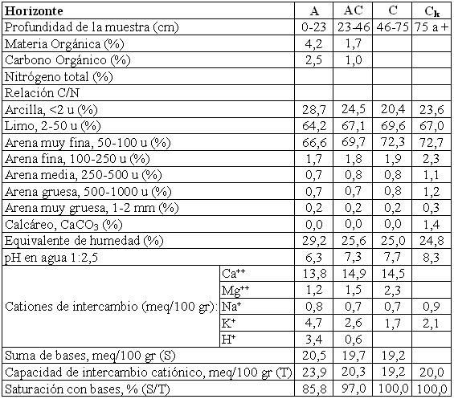

Haplustol éntico, limosa fina, mixta, térmica
Capacidad de uso: IVc
Los suelos de esta Serie se han desarrollado débilmente sobre sedimentos eólicos (loess), el relieve es suavemente ondulado encontrándose en situaciones relativamente más elevadas, sin influencia de derrames finos provenientes del Oeste, el drenaje es moderado a algo excesivo, sin alcalinidad ni salinidad. Se encuentra normalmente asociado a la Serie Candelaria y a Sebastián Elcano. En el subsuelo hay carbonato de calcio libre aproximadamente a los 70 cm de profundidad. Presenta un horizonte A de 23 cm de espesor; textura franco limosa a franco arcillo limosa y estructura en bloques subangulares, moderados; continua hacia abajo un horizonte de transición AC hasta 46 cm con estructura masiva a bloques débiles. El horizonte C aparece a 46 cm de profundidad y a 75 cm se observa reacción al ácido clorhídrico en la masa del suelo, tiene textura franco limosa fina y de color pardo amarillento oscuro. La limitación climática es de moderada a severa.
Descripción del perfil típico:
Un perfil representativo de este suelo fue descrito a 8 km al NO de Cañada de Luque, departamento Totoral, provincia de Córdoba.
A 0-23 cm; color en húmedo pardo grisáceo muy oscuro (10YR3/2); franco limoso a franco arcillo limoso; estructura en bloques subangulares medios a moderados; friable en húmedo; ligeramente plástico y ligeramente adhesivo; pH 6,3; raíces muy abundantes; límite inferior claro y suave.
AC 23-46 cm; color en húmedo pardo oscuro (10YR3/3); franco limoso a franco arcillo limoso; masivo y estructura en bloques débiles; muy friable en húmedo; ligeramente plástico; ligeramente adhesivo; pH 7,3; raíces abundantes; límite inferior gradual.
C 46-75 cm; color en húmedo pardo amarillento oscuro (10YR3/4); franco limoso; masivo, muy friable en húmedo; ligeramente plástico no adhesivo; pH 7,7; raíces escasas.
Ck 75 cm a +; color en húmedo pardo a pardo oscuro (7,5YR4/4); franco limoso; masivo; friable; plástico; no adhesivo; pH 8,3.
Cuadro Nº24
Datos analíticos Serie LOS MISTOLES
Ubicación: Latitud 30°41'S Longitud 63°46'O Altitud 280 m.s.n.m.

|